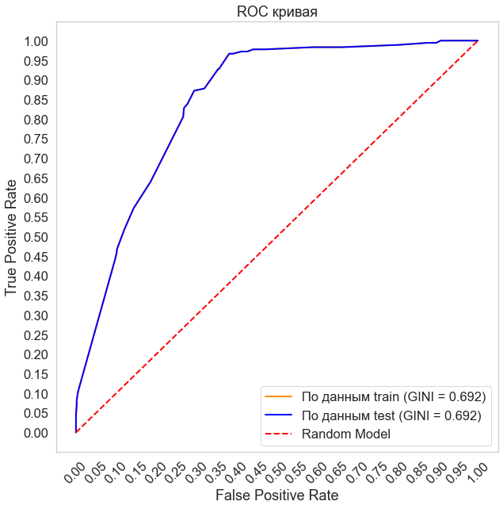
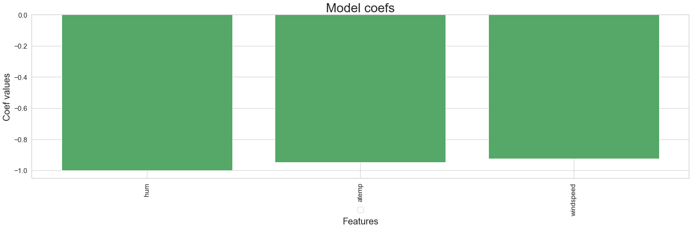
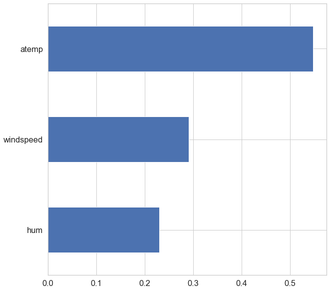
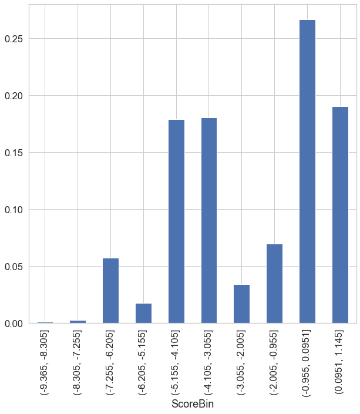
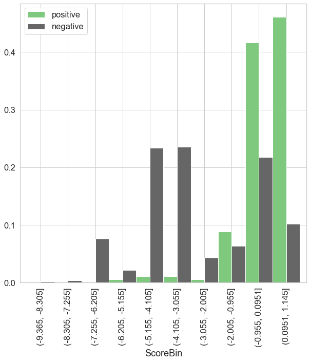
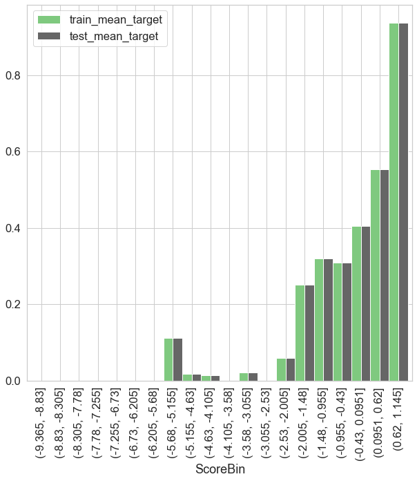
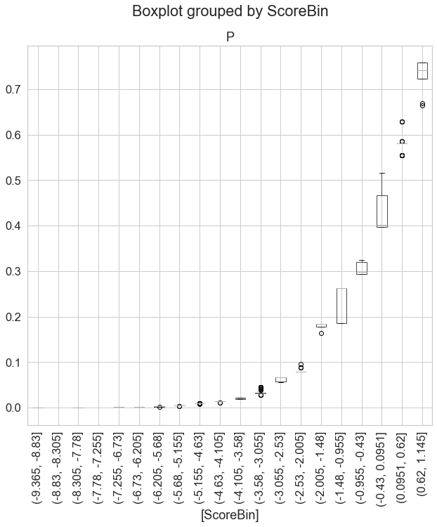
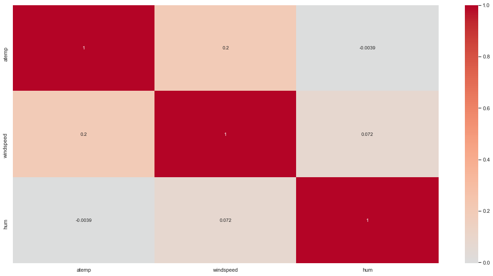

1. General Provisions
-
1.1. Purpose of the Document
This report is made to ensure the continuity of business processes, preserve and share internal organization expertise within the Group, as well as to prove the feasibility and validity of the developed model.
To achieve the goals, the Report provides insights into some essential methodological approaches to modeling.
-
1.2. Goals and Tasks which Require Building a Model
-
Run autoWoe on bikeshare dataset to test library
-
-
1.3. Document Structure
- Section Model parameters contains model description: features, coefficients of the regression model, splitting features into bins.
- Section Validation tests contains information about validation tests.
The report has the following structure:
-
1.4. Model Summary
Key model identifiers are given in Table 1.
Table 1. Model identifiers
Parameter Value Model name / ID Bikeshare classification Report version 1 Model customer Own project Name of the Group member and high level department Own project Model developer (if an external developer is involved, it is necessary to indicate Company's name) Kristof Rabay Description and specification of datasets that are used to develop and test the model are presented in Table 2.
Table 2. Summary of data sets used to build the model
Parameter Training set Test set Target event description daily bike shares reached 6000 Non-target event description daily bike shares did not reach 6000 Observations count in sets 731 731 Target events count 180 180 Non-target events count 551 551 Mean of target in sets 24.62% 24.62% Predictions of the model trained on the training set are shown in Table 3.
Table 3. Model predictions (trained using the training set)
Parameter Training set Test set AUC 84.60% 84.60% Gini 69.20% 69.20% 
2. Model Structure
-
2.1. Coefficients of the Regression Model
Coefficients of the regression model are shown in Table 4.
Table 4. Coefficients of the regression model
Feature name Regression coefficient hum -1.000207 atemp -0.948416 windspeed -0.922996 
-
2.2. Splitting Features into Bins and WoE Values in them


3. Validation Tests
-
3.1. Differences in the Number of Missing Values between Training and Test Sets
Statistics related to the number of missing values between training and test sets are shown in Table 5.
Table 5. Missing values
Feature name Number of valid values in the training set Number of valid values in the test set Number of missing values in the training set Number of missing values in the test set Percentage of valid values in the training set Percentage of valid values in the test set Difference in percentage of valid values in sets hum 731 731 0 0 0.00 0.00 0.00 atemp 731 731 0 0 0.00 0.00 0.00 windspeed 731 731 0 0 0.00 0.00 0.00 -
3.2. Classification Quality for Each of the Final Model's features


-
3.3. Confidence Interval for Gini Index
-
95% confidence interval for Gini index:
- - In the training set: (0.631, 0.75)
- - In the test set: (0.63, 0.748)
-
3.4. P-value for Model Coefficients
For features in training set:
Feature name P-value windspeed 8e-06 hum 3e-06 atemp 0.0 Intercept_ 0.0 For features in the test set:
Feature name P-value windspeed 8e-06 hum 3e-06 atemp 0.0 Intercept_ 0.0 -
3.5. One-dimensional Analysis
Gini for the training set

Gini for the test set
-
3.6. Check for Monotony


-
3.7. Check for Backlash


-
3.8. Check for VIF
Feature name VIF value windspeed 1.049079 atemp 1.043716 hum 1.005514 -
3.9. PSI
Total PSI
Feature name PSI value atemp 0.0 windspeed 0.0 hum 0.0 PSI for non-target events
Feature name PSI value atemp 0.0 windspeed 0.0 hum 0.0 PSI for target events
Feature name PSI value atemp 0.0 windspeed 0.0 hum 0.0 Grouping by predictions on the training set (total)

Grouping by predictions of target and non-target events on the training set

Grouping by predictions on the test set (total)
Grouping by predictions of target and non-target events on the test set
PSI by grouped predictions of model
Total PSI 0.0 PSI for non-target events 0.0 PSI for target events 0.0
4. Additional Reports
-
4.1. Prediction Bin Statistics
Mean value of the target on the training and test set

Prediction statistics for the training set

ScoreBin count mean std min 25% 50% 75% max (-9.365, -8.83] 1.0 0.0001 nan 0.0001 0.0001 0.0001 0.0001 0.0001 (-8.83, -8.305] 0.0 nan nan nan nan nan nan nan (-8.305, -7.78] 2.0 0.0003 0.0 0.0003 0.0003 0.0003 0.0003 0.0003 (-7.78, -7.255] 0.0 nan nan nan nan nan nan nan (-7.255, -6.73] 25.0 0.0009 0.0 0.0009 0.0009 0.0009 0.0009 0.0009 (-6.73, -6.205] 17.0 0.0017 0.0003 0.0014 0.0014 0.0019 0.0019 0.0019 (-6.205, -5.68] 4.0 0.0024 0.0002 0.0021 0.0024 0.0025 0.0025 0.0025 (-5.68, -5.155] 9.0 0.004 0.0001 0.0038 0.004 0.004 0.004 0.004 (-5.155, -4.63] 55.0 0.0094 0.0003 0.0075 0.0095 0.0095 0.0095 0.0095 (-4.63, -4.105] 76.0 0.0146 0.0006 0.011 0.0147 0.0147 0.0147 0.0147 (-4.105, -3.58] 36.0 0.0205 0.0011 0.0193 0.0193 0.0197 0.0217 0.0217 (-3.58, -3.055] 96.0 0.033 0.0052 0.0273 0.0303 0.0303 0.0322 0.0446 (-3.055, -2.53] 8.0 0.0624 0.0052 0.0557 0.0567 0.0662 0.0662 0.0662 (-2.53, -2.005] 17.0 0.0819 0.0048 0.0795 0.0795 0.0795 0.0795 0.0957 (-2.005, -1.48] 4.0 0.1785 0.0097 0.1639 0.1785 0.1833 0.1833 0.1833 (-1.48, -0.955] 47.0 0.2331 0.0374 0.1862 0.1862 0.2626 0.2626 0.2626 (-0.955, -0.43] 42.0 0.3032 0.0123 0.2936 0.2936 0.2976 0.3204 0.3245 (-0.43, 0.0951] 153.0 0.4241 0.031 0.3974 0.3974 0.4021 0.4661 0.5168 (0.0951, 0.62] 123.0 0.5809 0.0093 0.5547 0.5807 0.5807 0.5807 0.6292 (0.62, 1.145] 16.0 0.7339 0.0312 0.6645 0.7234 0.741 0.7586 0.7586 Prediction statistics for the test set
ScoreBin count mean std min 25% 50% 75% max (-9.365, -8.83] 1.0 0.0001 nan 0.0001 0.0001 0.0001 0.0001 0.0001 (-8.83, -8.305] 0.0 nan nan nan nan nan nan nan (-8.305, -7.78] 2.0 0.0003 0.0 0.0003 0.0003 0.0003 0.0003 0.0003 (-7.78, -7.255] 0.0 nan nan nan nan nan nan nan (-7.255, -6.73] 25.0 0.0009 0.0 0.0009 0.0009 0.0009 0.0009 0.0009 (-6.73, -6.205] 17.0 0.0017 0.0003 0.0014 0.0014 0.0019 0.0019 0.0019 (-6.205, -5.68] 4.0 0.0024 0.0002 0.0021 0.0024 0.0025 0.0025 0.0025 (-5.68, -5.155] 9.0 0.004 0.0001 0.0038 0.004 0.004 0.004 0.004 (-5.155, -4.63] 55.0 0.0094 0.0003 0.0075 0.0095 0.0095 0.0095 0.0095 (-4.63, -4.105] 76.0 0.0146 0.0006 0.011 0.0147 0.0147 0.0147 0.0147 (-4.105, -3.58] 36.0 0.0205 0.0011 0.0193 0.0193 0.0197 0.0217 0.0217 (-3.58, -3.055] 96.0 0.033 0.0052 0.0273 0.0303 0.0303 0.0322 0.0446 (-3.055, -2.53] 8.0 0.0624 0.0052 0.0557 0.0567 0.0662 0.0662 0.0662 (-2.53, -2.005] 17.0 0.0819 0.0048 0.0795 0.0795 0.0795 0.0795 0.0957 (-2.005, -1.48] 4.0 0.1785 0.0097 0.1639 0.1785 0.1833 0.1833 0.1833 (-1.48, -0.955] 47.0 0.2331 0.0374 0.1862 0.1862 0.2626 0.2626 0.2626 (-0.955, -0.43] 42.0 0.3032 0.0123 0.2936 0.2936 0.2976 0.3204 0.3245 (-0.43, 0.0951] 153.0 0.4241 0.031 0.3974 0.3974 0.4021 0.4661 0.5168 (0.0951, 0.62] 123.0 0.5809 0.0093 0.5547 0.5807 0.5807 0.5807 0.6292 (0.62, 1.145] 16.0 0.7339 0.0312 0.6645 0.7234 0.741 0.7586 0.7586 -
4.2. Correlations by Factors Included in the Model

-
4.3. Scorecard
- __NaN__ - separate group with WoE evaluation
- __NaN_0__ - separate group with WoE = 0
- __NaN_maxfreq__ - added to the most frequent group without WoE evaluation
- __NaN_maxp__ - added to the group with maximum probability without WoE evaluation
- __NaN_minp__ - added to the group with minimum probability without WoE evaluation
- __Small__ - separate group with WoE evaluation
- __Small_nan__ - to the NaN group
- __Small_0__ - separate group with WoE = 0
- __Small_maxfreq__ - added to the most frequent group without WoE evaluation
- __Small_maxp__ - added to the group with maximum probability without WoE evaluation
- __Small_minp__ - added to the group with minimum probability without WoE evaluation
Variable Value WOE COEF POINTS Intercept None None -1.11 -1.11 atemp atemp <= 0.41 3.13 -0.95 -2.96 atemp 0.41 < atemp <= 0.53 -0.22 -0.95 0.21 atemp atemp > 0.53 -0.87 -0.95 0.83 atemp __NaN_0__ 0 -0.95 0.0 windspeed windspeed <= 0.06 1.83 -0.92 -1.69 windspeed 0.06 < windspeed <= 0.08 -1.29 -0.92 1.19 windspeed 0.08 < windspeed <= 0.18 -0.4 -0.92 0.37 windspeed 0.18 < windspeed <= 0.35 0.41 -0.92 -0.37 windspeed windspeed > 0.35 2.98 -0.92 -2.75 windspeed __NaN_0__ 0 -0.92 0.0 hum hum <= 0.49 0.2 -1.0 -0.2 hum 0.49 < hum <= 0.73 -0.24 -1.0 0.24 hum 0.73 < hum <= 0.74 -0.88 -1.0 0.88 hum 0.74 < hum <= 0.81 0.22 -1.0 -0.22 hum hum > 0.81 2.53 -1.0 -2.53 hum __NaN_0__ 0 -1.0 0.0
Missing values processing legend:
Rare/unknown category processing legend: -
4.4. Feature Selection History
Feature atemp Selected; Gini = 0.55, IV = 1.91 holiday Low importance hum Selected; Gini = 0.23, IV = 0.4 mnth Pruned during regression refit season Pruned by L1 selector weathersit Pruned during regression refit weekday Constant WOE value windspeed Selected; Gini = 0.29, IV = 0.43 workingday Constant WOE value -
4.5. Feature Contribution in the Model
Feature Contribution to ROC AUC atemp 0.1407 hum 0.0323 windspeed 0.0243